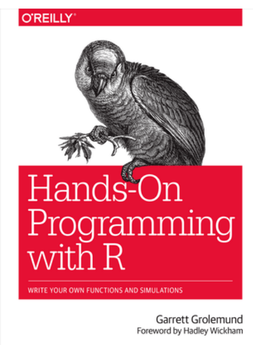
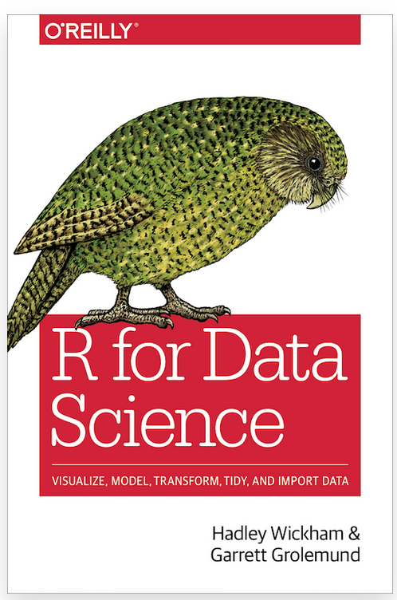
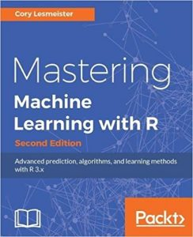

1.1 R - the Statistical Programming Language

Figure 1.2: The Official Logo of the R Programming Language
If you are a SBS student, then you would have (or will) learn(ed) this language during BS0004: Introduction to Data Science. However, the contents of that module are hardly sufficient for the work that I do during hackathons3.
For that reason, I ask that in addition to revising the R that you’ve learned during BS0004, that you at least learn bother to read the following books so that you don’t become overwhelmed during the event itself. Otherwise, if you have yet to take BS0004, then I will also list some beginner-friendly resources to learn grasp the basics of R.
1.1.1 What is R?
R is a dialect of S. That’s all.
1.1.1.1 Okay, so… what is S?
S is a statistical computing language developed at Bell Laboratories some time during 1975 to 1976. During the latter time period, much of statistical computing had been done using FORTRAN: a general purpose programming language that was especially used for scientific programming and number crunching. Hence, S was created to provide a more interactive and a more intuitive approach to the aforementioned tasks.
When the first working version of S was made in 1976, it didn’t have a name. However, the language got its name via suggestions from the scientific community and the fact that the letter “S” was consistent with the names of other programming languages developed at Bell Laboratories (e.g., C).
Figure 1.3: A Vintage Copy of the 1988 Blue Book
Needless to say, S has come a long way since its fruition in the late 1900s. Some time in the late 1980s, the New S Language (i.e., the 1988 blue book - see above image) was published and had new features: for instance, the ability to pass functions to functions (i.e., first-class functions). Many other changes were also introduced, including but not limited to the usage of X11 and PostScript graphics devices, the re-writing of many internal functions from FORTRAN to C, and the usage of double precision arithmetic.
Figure 1.4: Ross Ihaka (left) and Robert Gentlemen (right) Receiving the Pickering Medal
In 1991, Ross Ihaka and Robert Gentlemen (i.e., the above two individuals) - statisticians from the University of Auckland - began working on a newer implementation of S. R got its name as both statisticians’ names begin with the letter “R.”
Nevertheless, Ihaka and Gentlemen publicized their implementation on the data archive StatLib in 1993. Only during 1995 did the statistician Martin Mächler convince Ihaka and Gentlemen to make R a free and open-source software under the GNU public license, effectively making 1995 the year the first version of R was released.

Figure 1.5: A User-Made Logo of the Comprehensive R Archive Network
R has been extensively developed since 1995. In 1997, the Comprehensive R Archive Network (or CRAN for short) was launched: an online repository of R’s executable files, source code, documentations, and user-created packages. CRAN currently has 101 mirrors and 18728 user-created packages.
During the same year, the R core team was also formed to further develop the language - the team currently consists of Ihaka, Gentlemen, and many other influential statisticians. In 2003, the R foundation was formed as a non-profit organization to provide further support for developing R.
1.1.2 Installing R and RStudio
In order to use R, you will need to have R installed onto your machine. While there are R interpreters and code editors that are freely available on the internet, these editors are more suitable for fiddling around with R (i.e., you have some code that you want to try out or are new to the language and just want a quick and easy way of trying it out) than they are for machine learning or number crunching.
Figure 1.6: An Online REPL Shell for R Displaying an Error
More importantly, however, is that the functionalities these editors provide are severely limited. Not only will you be unable to save your work or install packages, but some base R functions may not work at all in these editors!
Fortunately, R comes shipped in different distributions depending on your computer’s operating system. I’ve listed several installation links below - click on the appropriate link to download R for your machine. The installation instructions for R should be listed on the installations links themselves:
Although only the R console is necessary to begin working with R, I’d highly recommend installing RStudio - an Integrated Development Environment for R - as well. RStudio is free and comes equipped with features such as:
- Syntax highlighting
- An object viewer
- Tools for version control, plotting, and debugging.
You can download RStudio here - just be sure to download RStudio Desktop and not RStudio Server!
1.1.3 Resources to consult
I’ve listed several resources to consult to refresh or strengthen your knowledge of R. Depending on how familiar or competent with the material presented in these books, you may or may not have to spend that much time with each one of them.
1.1.3.1 I’ve forgotten my R / never touched it before - where do I start?
Glad you asked - here are a couple of resources that you can consider consulting.
swirl(https://swirlstats.com/)swirlis a package developed by students at Johns Hopkins University to help R novices learn R in R4.swirlhas content for topics from the bare basics of R (i.e., how do I print something out to the R console, how do I create a vector, etc.) to dealing with statistics in R; to useswirl, open up RStudio and type the following into your R console:install.packages("swirl") library(swirl) swirl()And once you’ve typed in and executed the above code,
swirlwill provide you with a set of instructions on what to do next!Hands-On Programming with R (https://rstudio-education.github.io/hopr/index.html)
Figure 1.7: Hands-On R Programming by Garrett Grolemund
This is a fun (albeit unconventional) introduction to R from one of my favorite book publishers. In this book, the author aims to teach you R by coding several mini projects.
While the content presented in this book is decent, not all of it will be very relevant for hackathons. Chapters 2, 3, and 5 of the book are the most important to know5.
R Programming (https://www.coursera.org/learn/r-programming?specialization=jhu-data-science)
This MOOC from Johns Hopkins University is a supposed introduction to R.
Even though this MOOC is meant to be a four-week introduction to R, it is still a very tough MOOC nonetheless! However, it does make you a better programmer!
1.1.3.2 Doing stuff with R
The resources listed above are really only good for absolute beginners: people who know nothing about R and just want to get acquainted with the basics of the language.
If you already know the basics of R, then do check out these resources to get familiar with the tools that I use within R:
R for Data Science (https://r4ds.had.co.nz/)
Figure 1.8: R for Data Science by Hadley Wickham
This book teaches you the basics of data science (miles better than BS0004 does if you ask me) using the
tidyversefunctions. This book is also especially great if you don’t quite know what data science is or what a typical data science workflow looks like.That said, the code shown in this book is drastically different from the above sources (and what BS0004 teaches). However, the code in this book is also reminiscent of the coding that I do, so definitely read this book!
Practical Machine Learning (https://www.coursera.org/learn/practical-machine-learning)
This is a four-week long MOOC on Coursera by Johns Hopkins University. In this MOOC, you will learn to build machine learning models using the
caretpackage.This MOOC is super tough, but also extremely rewarding once you do complete it.
Mastering Machine Learning with R
Figure 1.9: Mastering Machine Learning with R by Cory Leimeister
Most NLB libraries should have this book available. Otherwise, you can head on over to library genesis to search for this book!
This book covers numerous machine learning algorithms that I think one ought to know (e.g., dimensionality reduction, regressions, clustering, business analytics, decision trees, etc). It does not, however, make one an expert at machine learning - becoming an expert takes years of one’s time and energy. It does, however, provide you with a good foundation of machine learning.
Data Visualization in R with
ggplot2(https://www.coursera.org/learn/jhu-data-visualization-r)If you’ve forgotten or don’t know what
ggplot2is, it’s a package in R that helps you create presentation-worthy plots (i.e., if you are presenting your work in front of an audience, you can consider usingggplot2to make things look more presentable).While this MOOC is also four-weeks long, it is also relatively chill. I finished this course in one sitting.
That is, assuming that you only knew as much R as there is in BS0004, you are going to have a very rough time under me if you don’t bother to learn more about the language.↩︎
Yeah, I know - this sounds like a paradox.↩︎
So, if you don’t have that much time, I’d suggest reading through those chapters at the very least↩︎